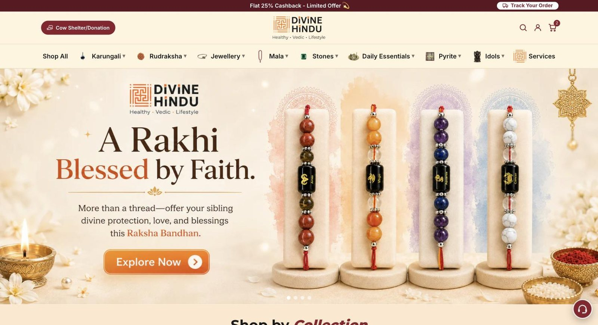
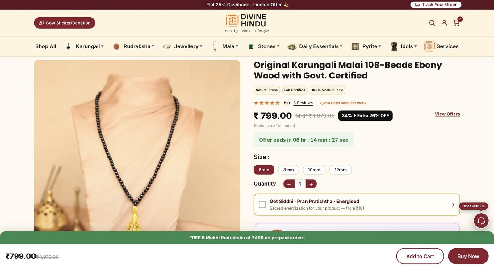
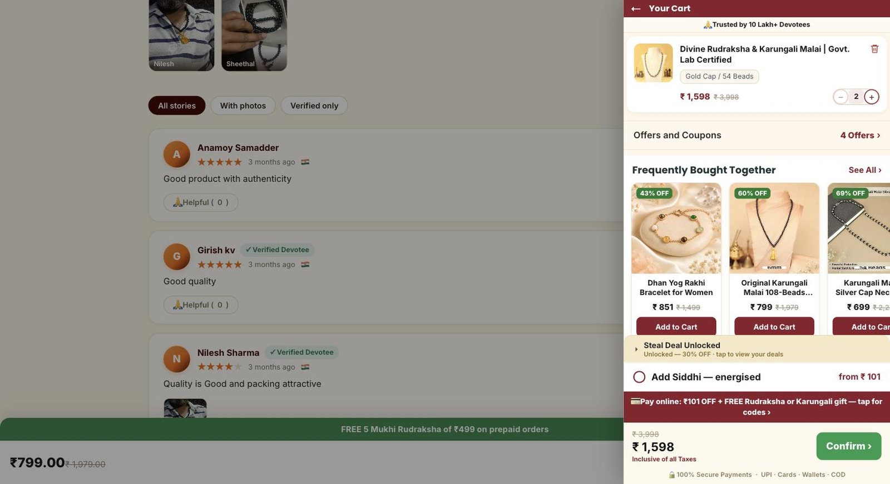
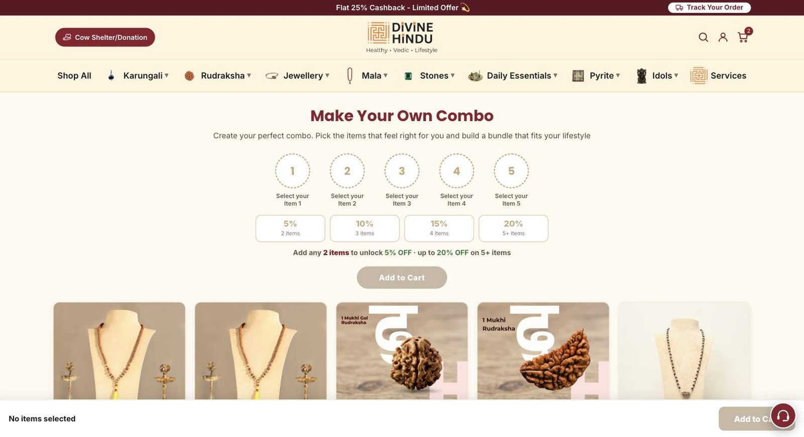
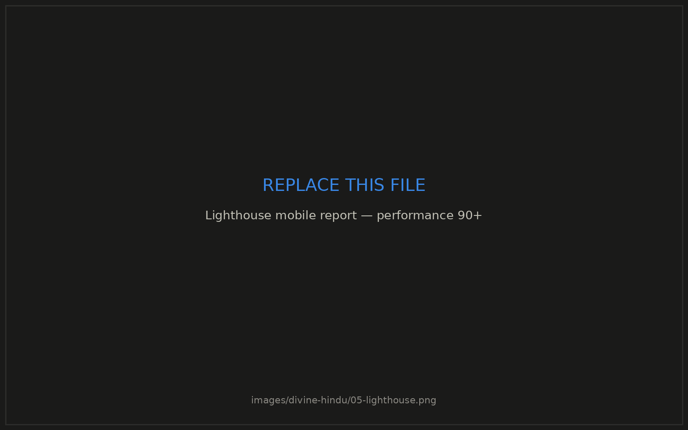

Divine Hindu — 800-SKU Shopify storefront
The problem
A devotional-goods catalogue is unusually hard to merchandise. A customer doesn't arrive looking for "a bracelet" — they arrive looking for something appropriate to their rashi, their deity, a specific dosha, or a ritual they've been told to perform. Off-the-shelf collection logic can't express that, and the page-builder themes that could be styled into it were carrying so much third-party JavaScript that mobile performance sat at 60.
The constraints
- Mobile-first, low-bandwidth. Most traffic arrives on mid-range Android over patchy mobile data.
- Non-technical merchandising. The catalogue team had to re-merchandise without a developer.
- No performance budget to spare. Every app that injects a script competes with revenue.
- 800 SKUs with deep attribute overlap — one product legitimately belongs in six taxonomies.
What I built
I wrote the theme from scratch in Liquid rather than buying one — no page builder, no purchased base. That decision is the reason the rest was possible: every section is one I own, so there was no inherited JavaScript to fight and no vendor upgrade path to break.
- Metaobject-driven taxonomy. Rashi, deity, material and ritual are modelled as metaobjects rather than hard-coded collections, so a product can carry all of them at once and the merchandising team can create a new axis without touching code.
- Custom cart on the Ajax Cart API with qualified upsells — offers are evaluated against current cart contents and customer state, so the drawer suggests what's actually complementary rather than a static "you may also like" list.
- Build Your Own Combo — a bundle builder with tiered discounting that reprices in real time as items are added, plus three-tier ritual add-ons that attach at cart and order level.
- Vedic recommendation calculators that take birth details and return a specific product recommendation, turning an advice-seeking visit into a guided purchase.
- GoKwik one-click checkout with COD verification, which is where the RTO work (below) hooks in.
- A page-transition and motion layer built natively rather than pulled from a library.
How performance went from 60 to 90+
The gain wasn't one trick, it was refusing to accept the usual costs:
- Removing third-party apps and rebuilding what they did natively (see the next case study) — the single largest contributor, because each app removed took its render-blocking script with it.
- Serving responsive images through Shopify's image CDN at explicit sizes, so the LCP element is never a full-resolution asset scaled down in the browser.
- Deferring everything not required for first paint, and inlining only the critical path.
- Reserving layout space for every async element so the motion layer costs nothing in CLS.
Result
A storefront doing ~US$600K/month with mobile performance at 90+, where the catalogue team re-merchandises 40+ collections without engineering involvement, and where every remaining script on the page is one I chose to put there.




